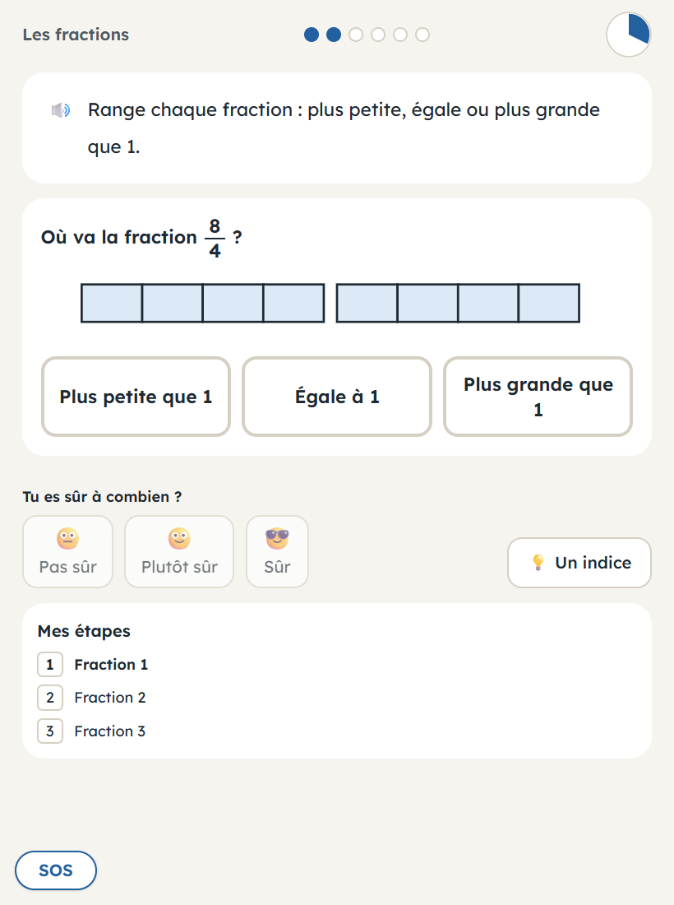
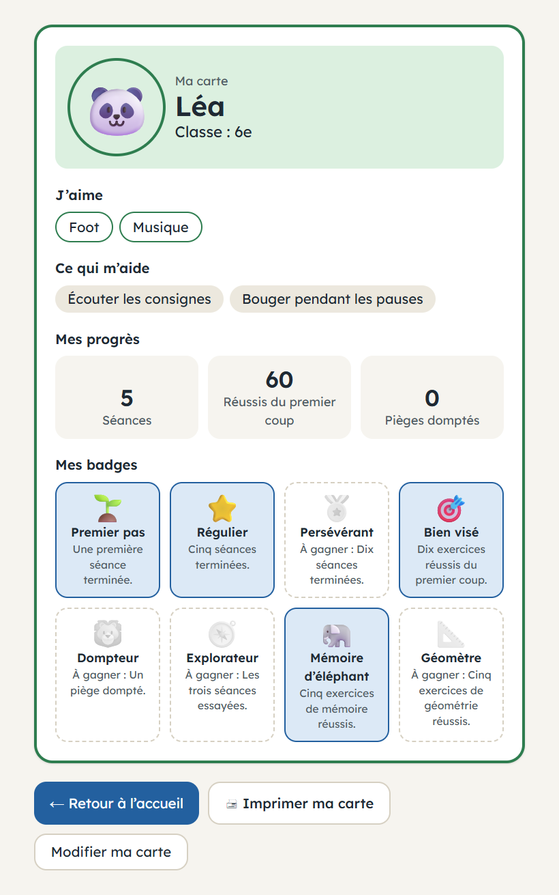
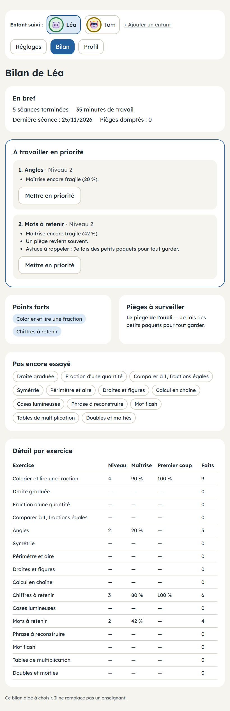

Fractions, géométrie et mémoire de travail. Des séances courtes, qui ménagent l'attention et soutiennent les fonctions exécutives. Votre enfant y voit simplement un jeu de maths à son rythme.
Trois domaines clés pour réussir l'entrée au collège. Chaque exercice existe en 5 niveaux.
Boussole Maths suit la méthode du cahier de soutien d'Educ'Harmonia : concret, imagé, puis abstrait.
Le niveau monte quand ça réussit. Il redescend en douceur en cas de blocage. Vous pouvez aussi le fixer vous-même.
De 5 à 15 minutes, avec des pauses. Une consigne à la fois, lue à voix haute si besoin.
Une erreur qui revient devient un « piège ». L'enfant reçoit une astuce et apprend à le dompter.
Jamais de note rouge. Des indices progressifs et un bouton SOS. On valorise la méthode, pas la vitesse.
Toutes les corrections sont calculées par le programme. L'IA ne fait jamais les calculs.
Un prénom ou un surnom suffit. Aucune publicité. Aucun diagnostic n'est enregistré.
Une question à la fois, avec un dessin pour comprendre. L'enfant dit aussi s'il est sûr de lui.


Votre enfant choisit son avatar et ses couleurs. Sa carte montre ses progrès et ses badges.
Vous voyez d'un coup d'œil ses points forts et ce qu'il faut retravailler.

Un prénom, un avatar, sa classe et ce qui l'aide.
Maths, Mémoire, ou Mélange des deux.
Le niveau s'ajuste à chaque exercice réussi.
Le bilan vous dit quoi retravailler ensuite.
Fonctionne sur ordinateur et tablette, dans le navigateur. Boussole Maths est un outil d'entraînement. Il ne remplace ni un enseignant, ni un suivi médical ou orthophonique.